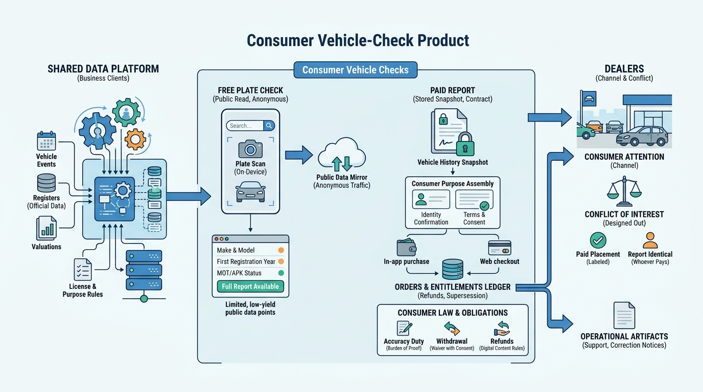

Part VI — DISTRIBUTION: APIs, Events and Data Products
The Consumer Door: Plate Checks, Reports and B2C Services

Image generated by Google Gemini (gemini-3-pro-image-preview)
Part VI — DISTRIBUTION: APIs, Events and Data Products

Image generated by Google Gemini (gemini-3-pro-image-preview)